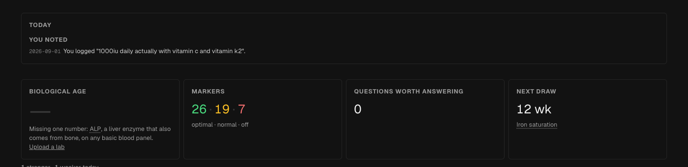
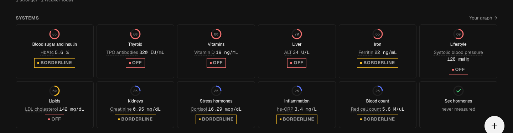
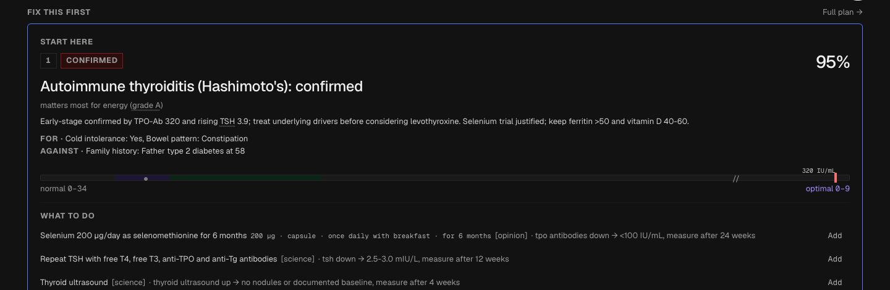
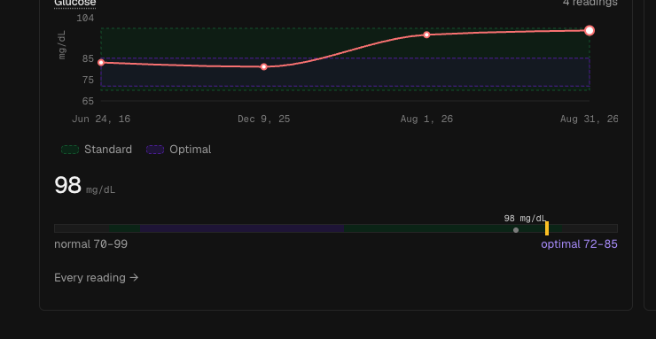
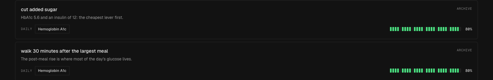
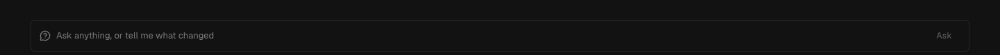

Left is the app as it ships today, cropped from real screenshots of the test user in dark mode. Middle keeps that canvas, that type and that spacing, and swaps in only the new parts: the ruler, the evidence glyphs, the system rows, the habit dots. Right is v3: warm grey canvas, tonal panels, big light numbers, one lime accent.
Same numbers in all three columns. Markers 26 · 19 · 7, TPO 320 IU/mL, glucose 98 mg/dL, HbA1c 5.6 %, ferritin 22, ALT 34, vitamin D 19, LDL 142. Hashimoto's confirmed at 95 %.
Scale note: the left column is a 1440 px screenshot squeezed into a third of the page, so read it for layout and density, not for type size. The middle and right columns render at their real size.
Now shipped

Now + new same canvas
v3 new surface
What changes. Today the hero is four bordered boxes of equal
weight, and one of them says "biological age: missing ALP". The new
hero picks one thing to say and gives it the size. Cost. Middle
column is a layout swap in home.tsx only: same tokens,
same borders, four cards become two. Right column needs the tile
gradients, the grain layer and the warm canvas in
globals.css before any of it renders.
Now shipped

Now + new same canvas
What changes. Twelve equal cards with a decorative ring each
become a scannable list: system, the marker that drives it, its value,
one status word. The ring never encoded anything a reader could name.
Cost. Both new columns are the same component rewrite in
home.tsx; the middle one reuses the existing card border
and status colours, so it is the cheaper of the two by exactly the
cost of the token set.
Now shipped

Now + new same canvas
TPO antibodies at 320 IU/mL with TSH at 3.9 mIU/L is the picture of an immune system attacking the thyroid.
v3 new surface
TPO antibodies at 320 IU/mL with TSH at 3.9 mIU/L is the picture of an immune system attacking the thyroid.
What changes. The action row today ends in a bare
[opinion] in square brackets and an "Add"
link that looks like body text. The glyph carries the same fact in one
character with a hover, and the primary action becomes the only filled
control in the card. Cost. Middle column touches
action-card.tsx and the range bar; right column touches
the same files plus every surface token the card sits on.
Now shipped

Now + new same canvas
98 mg/dL — one point under the ceiling, up from 95 on Aug 1 and 85 in June 2016. Four readings.
v3 new surface
98 mg/dL — one point under the ceiling, up from 95 on Aug 1 and 85 in June 2016. Four readings.
What changes. The shipped range bar prints the value in a
floating label above a yellow tick and puts "normal 70–99" and
"optimal 72–85" at opposite ends, so the eye has to reassemble the
scale. The ruler gives the axis two named ends, the bands as light,
the previous reading as a ghost dot, and one coloured phrase in the
sentence. Cost. This is the one row where the middle column is
almost free: range-bar.tsx is a single component with a
single set of props, and swapping it upgrades every screen that uses
it at once. Do this row first whatever else gets picked.
Now shipped

Now + new same canvas
HbA1c 5.6 and an insulin of 12: the cheapest lever first.
v3 new surface
HbA1c 5.6 and an insulin of 12: the cheapest lever first.
What changes. The shipped row shows 24 green blocks and "80 %" but no way to tick the thing from where you are reading it, and the only action on the card is ARCHIVE. The new card names the start date, shows fourteen days one dot each with today ringed, and puts the tick in the card. Cost. The dots are the same habit-log query the percentage already runs, so the middle column is markup plus one existing mutation wired to a button.
Now shipped

Now + new same canvas
Three of your numbers point the same way. TPO antibodies at 320 IU/mL ●A with TSH at 3.9 is an immune system working on your thyroid. Ferritin at 22 ng/mL ●B means the iron stores are close to empty.
Sources Wichman 2016 · B your Aug 1 draw
v3 new surface
Three of your numbers point the same way. TPO antibodies at 320 IU/mL ●A with TSH at 3.9 is an immune system working on your thyroid. Ferritin at 22 ng/mL ●B means the iron stores are close to empty.
Sources Wichman 2016 · B your Aug 1 draw
What changes. Nothing structural. Phase 27 already ships the prose, the "Right now" row, the sources and the Act-on-it chips; what changes is that the evidence grade rides inline as a glyph instead of a bracket, and the chips get a press state. Cost. The lowest of the six rows in both columns, because the data contract behind it is already built.
Where the crops come from. Column one is
ref/now-home-dark.png (rows 1, 2, 3, 4, 6) and
ref/now-protocol-dark.png (row 5), the test user in dark
mode, cut to the section under comparison and not retouched. Column two
uses the app's own greys (#0a0a0a canvas, #262626 hairlines, 6 px radii)
with the new components dropped in. Column three uses the v3 tokens
unchanged. Every number in all three columns is the test user's real
value.